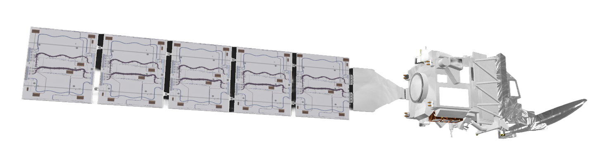
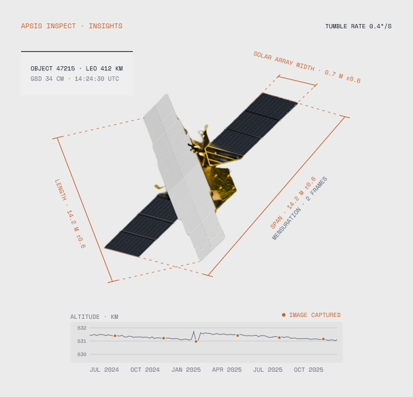
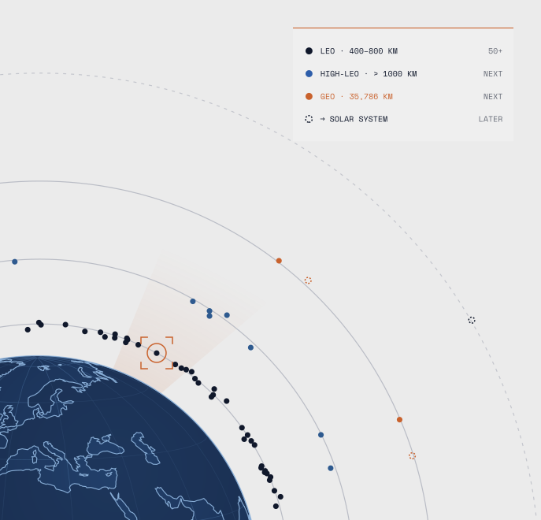
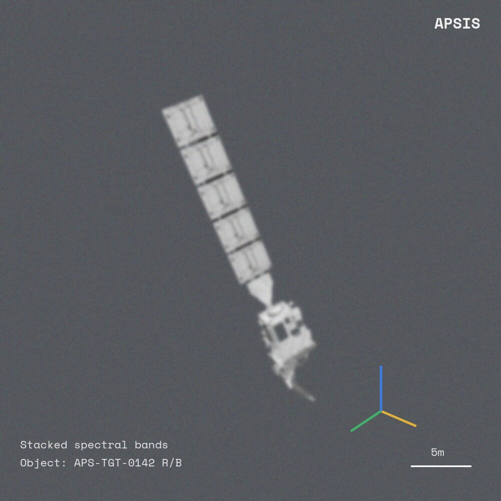
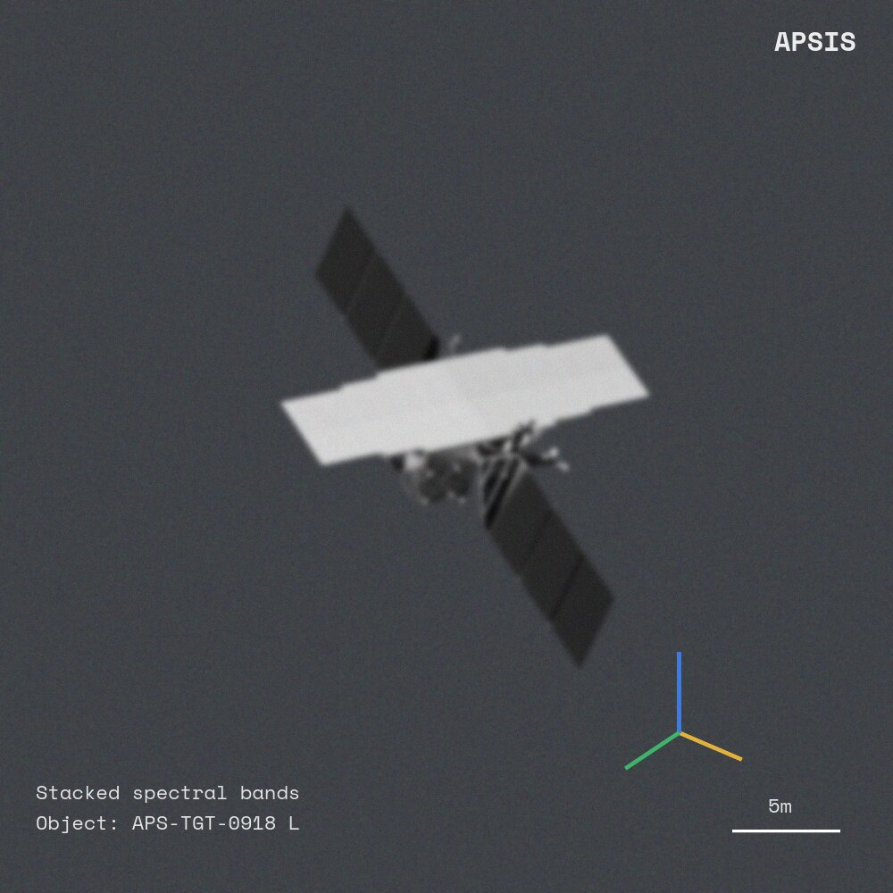
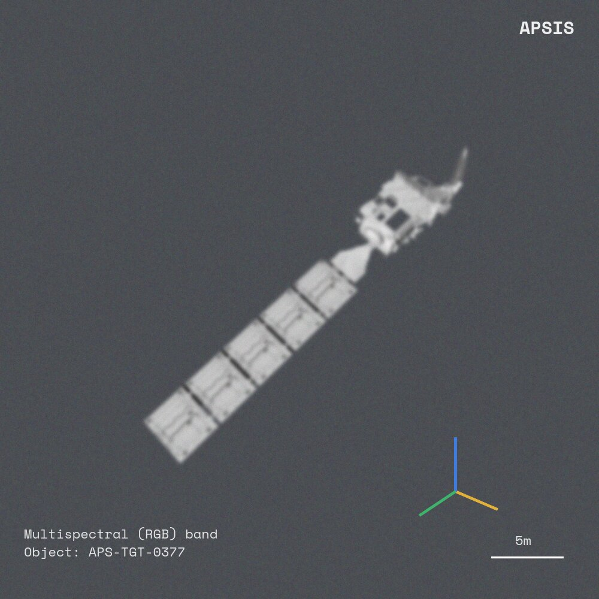
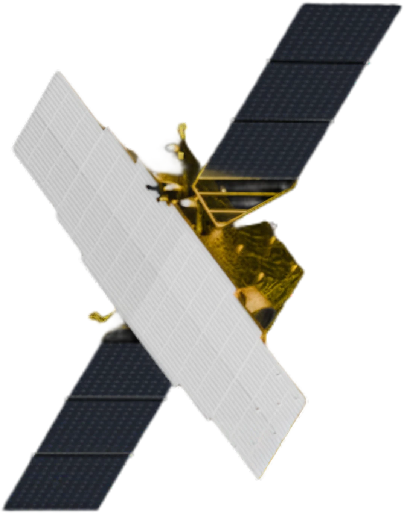
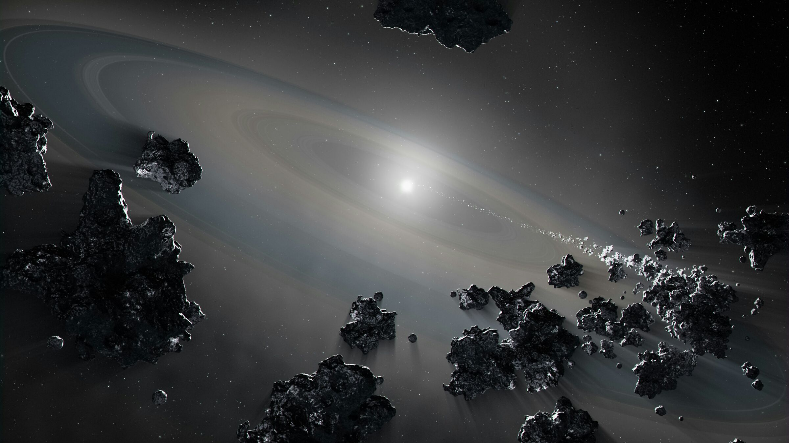

Building the space intelligence layer

The future of space depends on understanding it.

More spacecraft are operating across increasingly complex orbital environments and mission profiles. Knowing what is happening in space is foundational to every mission. Apsis is building the infrastructure to observe, analyse, and understand any object in space, making the next generation of space missions possible.
The infrastructure behind space intelligence.
Apsis brings sensors and software together in one system. The network sees more, while the software turns each observation into an answer.
Lens
Turn Observations Into Understanding.
Power next-generation space missions with an autonomous software layer. Our software platform finds the right moments to collect imagery. It tasks sensors, processes images, and helps explain what they show.

Network
See More Of Space, More Often.
Our network brings together purpose-built and partner sensors. More sensors mean more opportunities to observe more objects across Earth orbit and beyond.

Intelligence proven in orbit.



Apsis captures images of space objects from hundreds of kilometres away. Those images reveal an object's identity, configuration, and behaviour.
Apsis conducted sustained imaging operations of a rocket body over three days, resolving the full object from multiple angles.
Apsis identified and characterised a commercial operator’s spacecraft after launch, independently verifying deployment and configuration.
Our technology supports national security missions and the next generation of space operations. Every image provides evidence of what an object is and how it is behaving.
Making any image available. Enabling any mission.
Apsis exists to make any image in the Solar System available on demand. The more we can see in space, the more we can do there.

Understanding spacecraft is the starting point. Better visibility can support new ways to protect, service, move, and operate assets in space.
